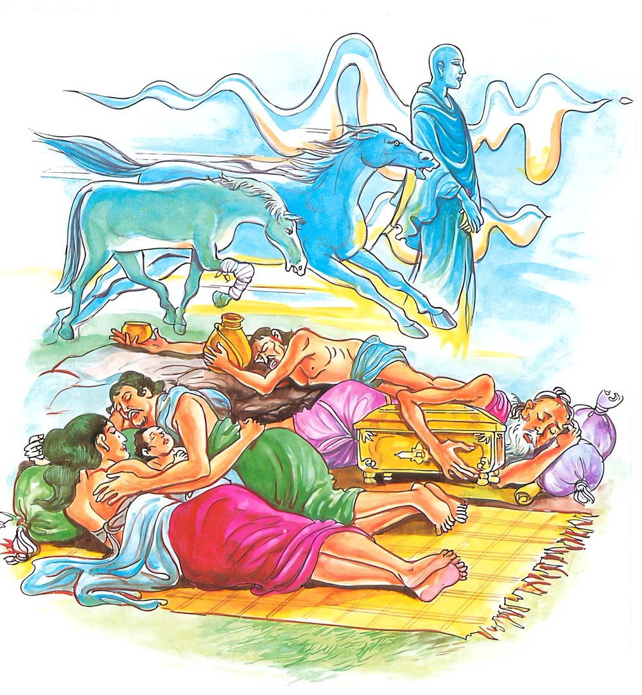

2-6 යහළු භික්ෂු දෙනමක්
මෙම කතාව ධම්මපද අටුවාවෙන් ද කියවන්න.
අප්පමත්තො පමත්තෙසු සුත්තෙසු බහුජාගරො
අබලස්සං’ව සීඝස්සො හිත්වා යාති සුමෙධසො.
පමා වූවන් අතුරෙහි නොපමා වූ, (කෙලෙස් නින්දෙන්) නිදන සතුන් අතුරෙහි (කෙලෙස් නිදි නැති හෙයින්) බොහෝ පිබිද සිටින, සොඳුරු නුවණ ඇති රහත් තෙමේ කොර පා ඇති ජවහීන දුබල අසකු හැර පියා යන සීඝ්ර ජව ඇති සෛන්ධව අසකු මෙන්, පමා වූ සතුන් (ආගමාධිගම දෙකින් ම) පසු කොට පියා (සසරින් නික්ම) නිවන් පුරට යන්නේ ය.

භික්ෂුන් වහන්සේලා දෙනමක් ‘අපි සසරින් එතෙර වෙමු’ යි. බුදුරජුන් වෙත ගොස් කමටහන් උගෙණ තවත් භික්ෂූන් ද ගෙණ වනයට ගියහ. ඒ දෙනමගෙන් එක් නමක් අලස ය. ඔහු, වනයට ගිය දා සිට එක දවසකුත් නො හැර, දර පරඬලා රැස් කොට ගිනිකබලක් දල්වා ගෙණ ලපටි හෙරණුන් හා එක් ව ස්වර්ගමෝක්ෂබාධක වූ කතා කියමින් ගිනි තපිමින් රෑ ප්රථමයාමය ඉක්මවයි. අනික් භික්ෂුන් වහන්සේ, අප්රමත්ත ව මහණදහම් කරන්නෝ සිය යාළුවාහට ‘ඇවැත්නි! ප්රමත්තයා හට සිවු අපායයෝ නිදන ගෙය වැනි ය, ඔහුට බුදුවරුන් සතුටු කරන්නට නො හැකි ය, ඔබතුමන් ප්රමත්ත ව කල් දවස ගත කරණබව පෙණේ, ඒ හොඳ මදි ය, එ හෙයින් මෙසේ නො කරණු මැනැවැ’ යි අවවාද කරති. එහෙත්, ඔහු එයට කන් නො දී එලෙස ම කල් ගෙවයි. ප්රථමයාමයෙහි ගිනි තපියි. අනික් භික්ෂූන් වහන්සේ භාවනා කොට, තමන් වසන කාමරයට වන් කල්හි එහි ගොස්, ‘අලසය, නිදන්නෙහි ද, කැලයට ආයෙහි නිදන්නට, බුදුරජුන් රවටන්නෙහි කුමට යැ, කමටහන් ගත්තෙහි කුමට යැ, බුදුරජුන් රවටනු තට නො හැකි ය, තා ම රැවටෙනු ඇතැ’ යි ඇණුම් බැණුම් කියා, තමන් මුළු රැය ම මහණදම් කරන්නකු සේ හඟවා ගෙට වැද නිදයි. අප්රමත්ත භික්ෂු තෙමේ, මැදියම නිදා, පැසුළුයම නැගිට මහණ දම් කරණුයේ, කල් නො යවා ම පිළිසිඹියාවන් ද ලබා රහත්බවට පැමිණියේ ය. අනික් මහණ තෙමේ දෙතිස් කතා කරමින් ගිනි තපිමින් ප්රමාදයෙන් කල් ගෙවී ය.
ඔවුහු, නිමකළ වස් ඇත්තෝ බුදුරජුන් වෙත ගොස් වැඳ එකත් පස් ව හුන්නෝ ය. එකල බුදුරජානන් වහන්සේ උන් හා පිළිසඳර කතා කොට ‘කිම, මහණ! හොඳින් මහණදම් කළහු ද? තමුසේලාගේ පැවිදි කිස මුදුන් පැමිණියේ ද? අදහස් ඉටු වී දැ?’ යි. අසා වදාළ සේක. ‘ස්වාමීනි! භාග්යවතුන් වහන්ස! මාගේ මේ යහළුවා අප්රමාදය කිමැ යි කිසිසේත් නො දන්නේ ය, එහෙයින් ඔහුට අප්රමාදයෙක් නැත, ගිය දා පටන් මොහු කළේ නිදාගැණීම ය’ යි කුසීත භික්ෂුව කීවිට, ‘තමුසේ කල් යැවුවහු කෙසේ දැ’ යි බුදුරජානන් වහන්සේ විචාළ සේක. ‘ස්වාමීනි! මම දර පරඬලා රැස් කොට ගිනි කබලක් දල්වා මුල් යම ගිනි තපිමින් නො නිදා මැ කල් යැවූයෙමි’ යි කී ය. එවිට බුදුරජානන් වහන්සේ; ‘තමුසේ ප්රමත්ත ව කල් යවා, අප්රමත්ත වීමි, යි කියන්නහු ය, අප්රමත්තයා, ප්රමත්තයා කරන්නහු ය, තමුසේ මාගේ පුත් වූ මේ තැන ලඟ, දිරුම්කඩට ගිය අස් මාල්ලකු වැනි වහු ය, මා පුත් තාගේ සමීපයෙහි බලජවැති අසකු වැනි ය’ යි වදාරා මේ ධර්මදේශනාව කළ සේක.
අපමත්තො පමත්තෙසු සුත්තෙසු බහුජාගරො,
අබලස්සං ව සිඝස්සො හිත්වා යාති සුමෙධසො’ති.
පමාවූවන් අතර නො පමා වූ කෙලෙස්නින්දෙන් නිදන්නවුන් අතර කෙලෙස්නින්දෙන් නො නිදන්නා වූ බොහෝ නිදිවැරීම් ඇති උතුම් නුවණැති මහරහතුන් වහන්සේ, කොරපා ඇති දුබල අසකු පසු කොට යන ඉක්මන් ගමන් ඇති අසකු සේ ප්රමත්තසත්වයන් හැර යන්නෝ ය.
අප්පමත්තො = නො පමාගති ඇති මහරහතුන් වහන්සේ.
පමත්තෙසු = පමාගති ඇත්තන් අතුරෙහි.
සුත්තෙසු = කෙලෙස්තින්දෙන් නිදන්නවුන් අතුරෙහි.
නිදීම දෙයුරු ය. ප්රකෘතිනිද්රා- ක්ලේශනිද්රාවශයෙන්. සිරුරෙහි කටයුතුවලට නො සුදුසු බව ය, ප්රකෘතිනිද්රා.
“නිද්දා’ති යා කායස්ස අකල්යතා අකම්මඤ්ඤතා ඔනාහො පරියොනාහො අන්තොසමොරොධො මිධං සුප්පං පචලායිකං සුප්පනා සුප්පිතත්තං” යනු එහිලා දේශනා ය. කායයාගේ දරථය ද, දරථවශයෙන් වූ භවාඞ්ගසෝතස ද පියවිනිදීම වශයෙන් ගැණේ. එය රහතුන් වහන්සේට ඇත්තේ ය. රහතුන් වහන්සේ ථීන මිද්ධ දෙක රහත් මගින් මුළුමනින් පැහූ සේක.
පියවිනිදීම නම් වූ කයෙහි ගිලන් බව උපාදින්නස්කන්ධයන්හි සේ අනුපාදින්නස්කන්ධයන්හි ද වේ. කමල් උපුල් ආදීහු එක් විටෙක පිපෙති. එක් විටෙක හැකිළෙති. සවස්වේලෙහි සමහර ගස්වල කොළ හැකිළේ. උදැසන දිග හැරේ මෝ ප්රකෘතිනිද්රාය.
සිහිමුළාවෙන් සම්යක්ප්රඥාවෙන් තොර ව නින්දට බසින්නහුට ආදීනව පසෙක් වන්නේ ය. දුකසේ නිදීම-දුකසේ පිබිදීම-පවිටු සිහින දැකීම-දෙවියන්ගේ ආරක්ෂාවෙන් බැහැරවීම-සුකුරු මිදීම යන මේ පසය ඒ. එළැඹ සිටි සිහියෙන් සම්යක් ප්රඥාවෙන් යුක්ත ව නිදන්නහුට මේ කිසිත් ආදීනවයෙක් නො වන්නේය. මේ වදාළ සැටි:-
“පඤ්චිමෙ භික්ඛවෙ! ආදීනවා මුට්ඨස්සතිස්ස අසම්පජානස්ස නිද්දං ඔක්කමතො දුක්ඛං සුපති, දුක්ඛං පටිබුජ්ඣති, පාපකං සුපිනං පස්සති, දෙවතා න රක්ඛන්ති, අසුචි මුච්චති, ඉමෙ ධො භික්ඛවෙ! පඤ්ච ආදීනවා මුට්ඨස්සතිස්ස අසම්පජානස්ස නිද්දං ඔක්කමතො, පඤ්චිමෙ භික්ඛවෙ! ආනිසංසා උපට්ඨිතසතිස්ස සම්පජානස්ස නිද්දං ඔක්කමතො, සුඛං සුපති, සුඛං පටිබුජ්ඣති, න පාපකං සුපිනං පස්සති, දෙවතා රක්ඛන්ති, අසුචි න මුච්චති, ඉමෙ ඛො භික්ඛවෙ! පංච ආනිසංසා උපට්ඨිතසතිස්ස සම්පජානස්ස නිද්දං ඔක්කමතො” යි
යම්කිසි පෘථග්ජනයෙක් කාමයන්හි පහවූ ආශා ඇත්තේ නම්, ඔහුට ද අසුචි නො මිදෙන්නේ ය. රහතුන් වහන්සේට නම්, අසුචි මිදීමෙක් මොන ලෙසකිනුත් නො වේ ම ය. මේ ඒ පාළිය:-
‘යෙපි තෙ ආනන්ද පුථුජ්ජනා කාමෙසු වීතරාගා තෙසම්පි අසුචි න මුච්චති අට්ඨානමෙතං ආනන්ද! අනවකාසො යං අරහතො අසුචි මුච්චෙය්ය’ යනු.
පංචනීවරණ ධර්මයන්ගේ වශයට යෑම මෙහි ක්ලේශනිද්රා නම්. ‘පංචනීවරණා සුත්තා නාම’ යනු ආගමය. මෝ මෙහිලා අදහස් කරණ ලද ය. කාමච්ඡන්දාදික්ලේශධර්මයන්ගේ වශයට ගිය පුද්ගල තෙමේ යම්කිසි තැනෙක හුන්නේ ද, සිටියේ ද අරුණ නැගූයේ ද පමාබැවින් ක්ලේශධර්මයන්ගේ වශයට ගිය බැවින්, සුත්ත, නම් වේ.
බහුජාගරො = බොහෝ නිදිවැරීම් ඇති.
‘සුමෙධසො’ යන්නට විශේෂණ යි. ශ්රද්ධා-වීර්ය්ය-සමෘති-සමාධි-ප්රඥා යන මොවුහු පස්දෙන ඉන්ද්රියයෝ ය. ‘ජාගර ‘ නම් වනුවෝත් මොවුහු ම ය. ‘පඤ්චින්ද්රියානි ජාගරානි’ යනු එය ව්යක්ත කරයි. මේ ධර්මයෝ රහතුන් වහන්සේ පිළිබඳ වූවෝ ඉතා මහත් බවට පැමිණියෝ ය. එ හෙයින් උන්වහන්සේ යම්කිසි තැනෙක හෙව නිදන සේක් ද, ඒ හැම තැන නො පමාබවෙහි පිහිටා කයගිලන් බැවින් නිදන සේක. නිදන නො නිදන හැම වේලෙහි ම ශ්රද්ධාදිධර්මයන්හි පිහිටා සිටින බැවින් ‘ බහුජාගර’ නම් රහතුන් වහන්සේ ය.
අබලස්සං = දුබල අසකු.
කොර වූ පා ඇති සිඳී ගිය ගමන් වේගය ඇති අශ්ව තෙමේ ‘දුබලස්ස’ නමි.
සීඝස්සො = ඉක්මන් ගමන් ඇති අසකු සේ.
මෙයින් කියැවෙනුයේ සින්ධුදෙශයෙහි උපන් ආජානෙය නමින් කියවෙන අශ්ව තෙමේ ය.
හිත්වා යාති = හැර යයි.
දුබල අසු පසු කොට යන වේගවත් අසකු සේ උතුම් නුවණැති මහරතුන් වහන්සේ බුදුදහම් ඉගෙණීමෙන් හා මගපල පසක් කිරීමෙන් ප්රමත්තපුද්ගලයන් පසු කොට යති. මදනුවණැත්තකු එක් සූත්රයක් ඉගෙණීමට වැයම් කරණ කල්හි උතුම් නුවණැත්තේ එක් වර්ගයක් උගණියි. මෙසේ ය. නුවණැත්තේ නුවණ නැත්තහු ඉගෙණීමෙන් පසුබා යන්නේ.
මදනුවණැත්තහු රෑ තැන් දිවාතැන් ආදිය කරන්නට වෑයම් කරණ කල්හි කමටහන් උගෙණ සජ්ඣායනා කරණ කල්හි උතුම් නුවණැත්තේ පුර්වභාගයෙහි ම අන්හු කළ රෑතැන් දිවා තැන්වලට වැද කමටහන් මෙනෙහි කරණුයේ සියලු කෙලෙසුන් නසා නවලොවුතුරා දහම් අත්පත් කරයි. මෙසේ ය නුවණැත්තේ මගපල පසක් කිරීමෙන් නුවණනැත්තහු පසුබා යන්නේ, සසර හැරදමා සසරින් මිදී යන්නේ’ මෙන්න පාළිය:-
“මන්දපඤ්ඤස්මිං හි එකං සුත්තං ගහෙතුං වායමන්තෙයෙව සුමෙධසො එකං වග්ගං ගණ්හාති, එවං තාව ආගමන හිත්වා යාති. මන්දපඤ්ඤෙ පන රත්තිට්ඨානදිවාට්ඨානාදීනි කාතුං වායමන්තෙයෙව කම්මට්ඨානං උග්ගහෙත්වා සජ්ඣායන්තෙයෙව සුමෙධසො පුබ්භභාගෙපි පරෙන කතං රත්තිට්ඨානදිවාට්ඨානං පවිසිත්වා කම්මට්ඨානං සම්මසන්තො සබ්බකිලෙසෙ ඛෙපෙත්වා නවලොකුත්තරධම්මෙ හත්ථගතෙ කරොති’ එවං අධිගමෙනපි හිත්වා යාති. වට්ටපදං ජහිත්වා ඡඩ්ඪෙත්වා වට්ටතො නිස්සරන්තො යාතියෙව”
සුමෙධසො = උතුම් නුවණැති මහරතුන් වහන්සේ.
වර්තමාන භවයෙහි දී ම මාර්ගඵලාවබෝධයට ශක්තිමත් ප්රාඥ තෙමේ ම මෙයින් කිය වේ.
ධර්මදේශනාවගේ අවසානයෙහි බොහෝ දෙන සෝවන් ඵලාදියට පැමිණියෝ ය.
ප්රමත්ත අප්රමත්ත ද්වෙසහායක භික්ෂූන්ගේ කථාවස්තුව නිමි.